Kuroishi
Kuroishi · Aomori
Kuroishi
Highlighted on the Aomori map.
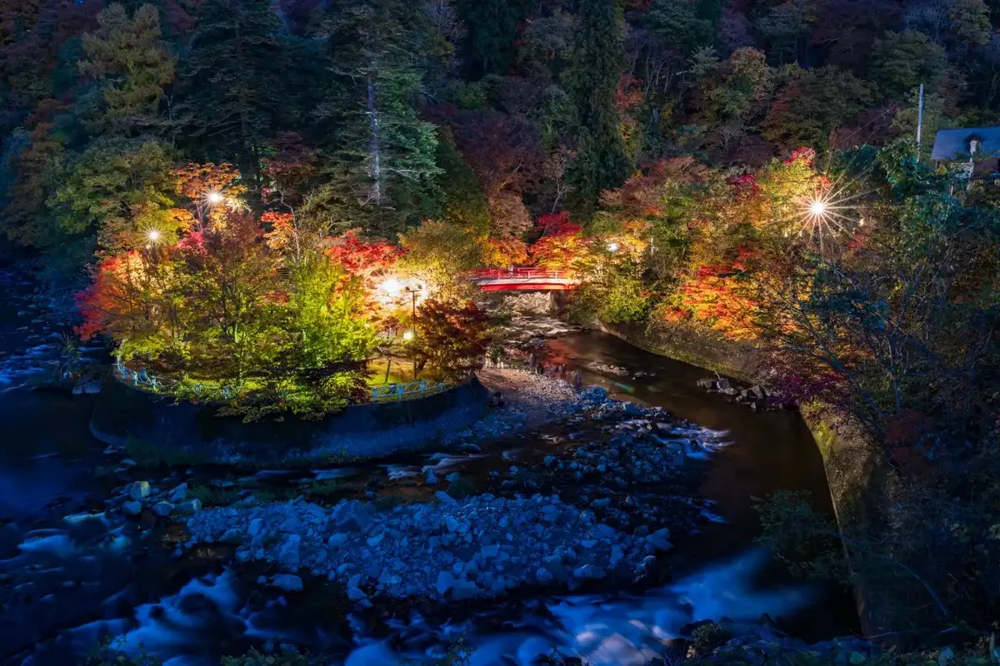
Stay
こみせの宿ホテル逢春
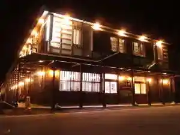
Komiseno Yado Hoteru Hou Haru
青森蔵泊
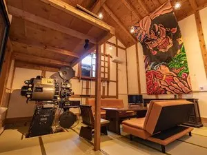
Aomori Kura Haku
ホテルリブマックス黒石
Hoteruribumakkusu Kuroishi
黒石温泉郷温湯温泉 山賊館
Kuroishi Onsen Sato Ontou Onsen Sanzoku Kan
飯塚旅舘
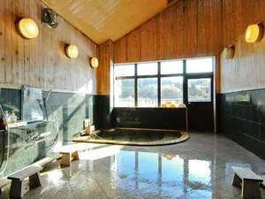
Iizuka Ryokan
花詠みの宿 花禅の庄
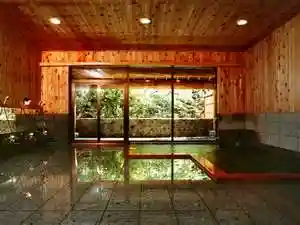
Hana Yomi No Yado Hana Zen No Shou
黒石温泉郷落合温泉 かねさだ旅館
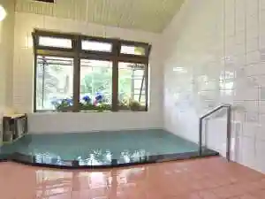
Kuroishi Onsen Sato Ochiai Onsen Kanesada Ryokan
旅の宿 斉川
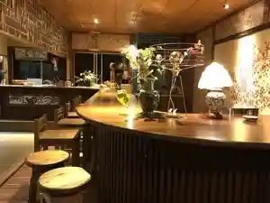
Tabi No Yado Saikawa
黒石温泉郷 板留温泉 ホテルあずまし屋
Kuroishi Onsen Sato Ita Ryuu Onsen Hoteru Azumashi Ya
Dining
ダイニングバー 168
Dainingubaa 168
Cook a Doodle Doo
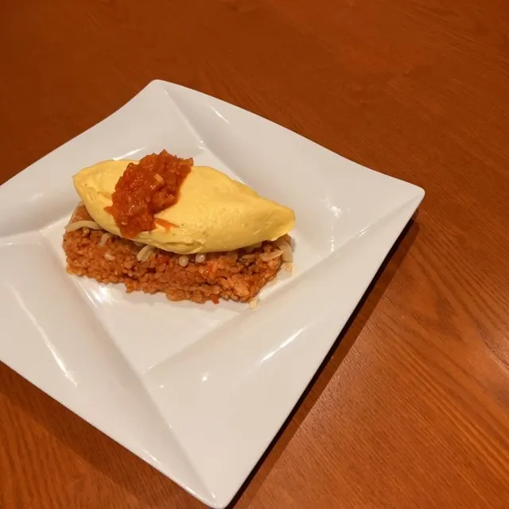
Cook A Doodle Doo
くろや
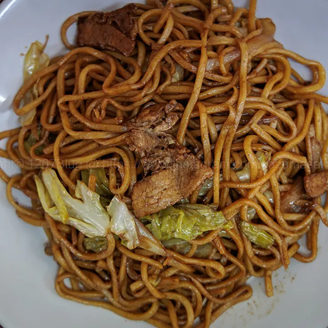
Kuroya
工藤そばや
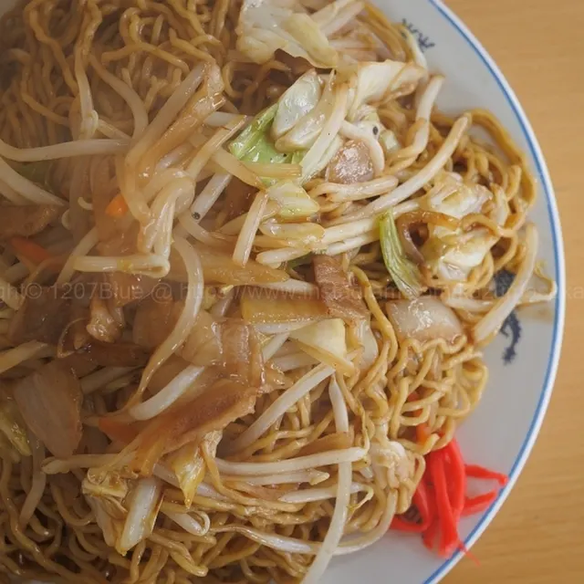
Kudou Sobaya
LAWSON 黒石南中野店
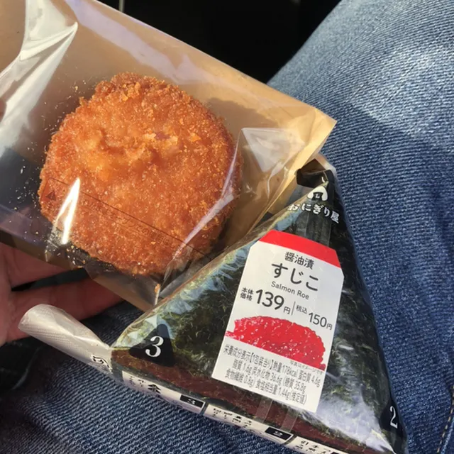
Lawson Kuroishi Nanchuu Yaten
ラーメン大将
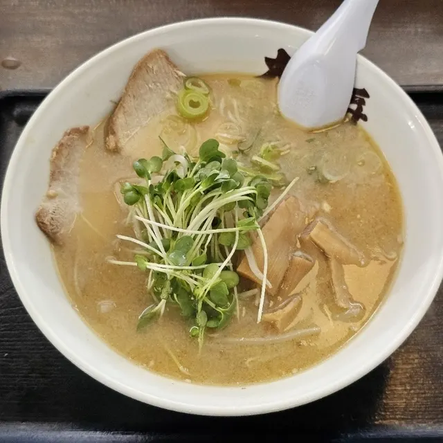
Raamen Taishou
大十
Dai Juu
レストラン レインボー
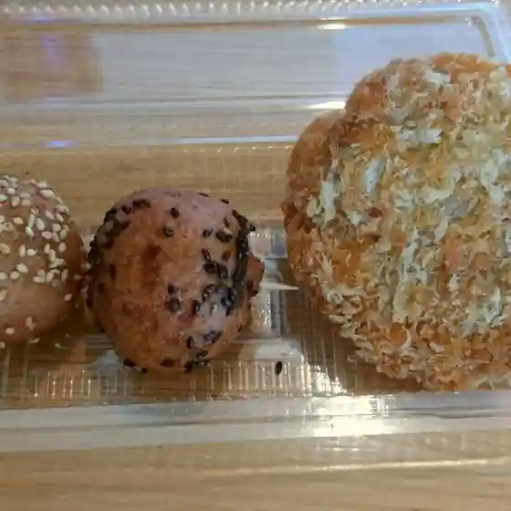
Resutoran Reinboo
飯塚旅館
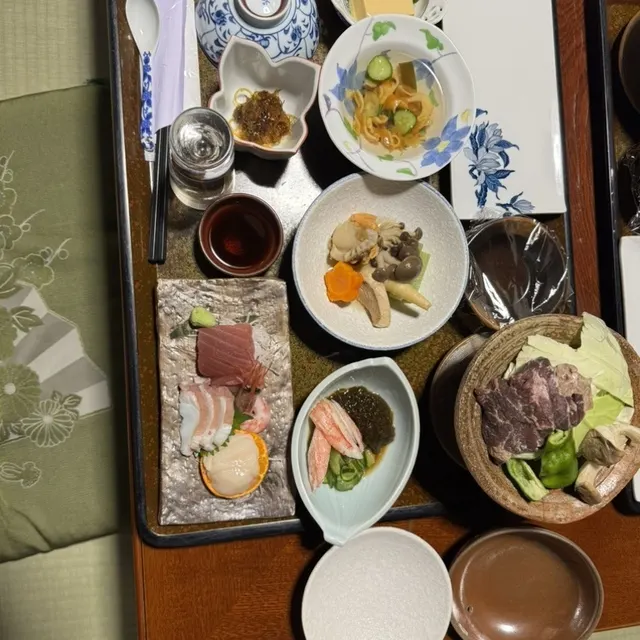
Iizuka Ryokan
お山の恵み
O Yama No Megumi
abCoffee
Abcoffee
リスボン菓子店
Risubon Kashi Mise
ポカラ ダイニング 黒石店
Pokara Dainingu Kuroishi Mise
ラーメンショップ 黒石店
Raamenshoppu Kuroishi Mise
ピーターパン
Piitaapan
ル・グレ
Ru Gure
MOTSU小屋
Motsu Koya
やまや
Yamaya
インラケチ
Inrakechi
リエモンファイブ
Riemonfaibu
津軽こみせ駅
Tsugaru Komise Eki
沖野餅店
Okino Mochi Mise
みらぼお喫茶店
Miraboo Kissaten
親方 ラーメン
Oyakata Raamen
Sights
Yokomachi Summer Night Market Festival
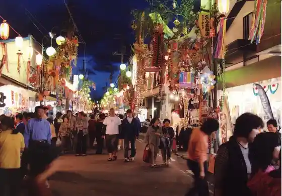
Tanabata-season night market with stalls and paper wishes on Yokomachi street in central Kuroishi.
Kodenten Handicraft Art Fair
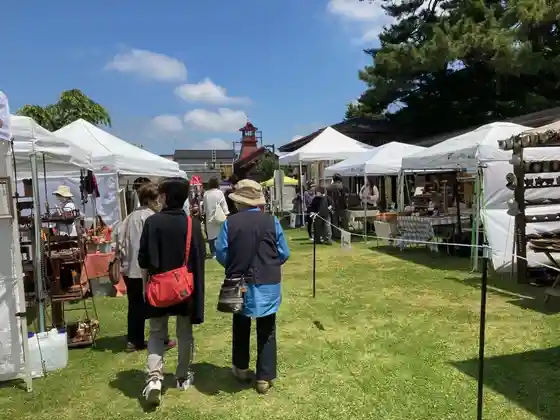
Handicraft sale and workshops on Kuroishi's Nakamachi Komise Street.
Kuroishi Greening Festival
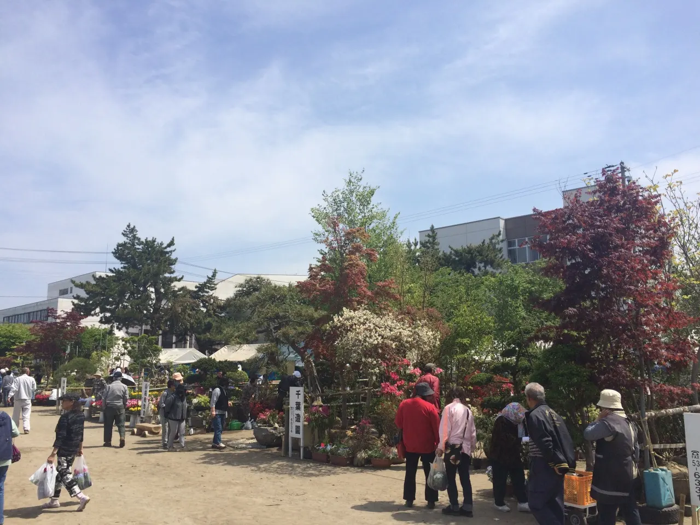
Annual garden fair where local landscapers sell flower and tree seedlings, with food stalls.
Okawara Onsen Fukujuso
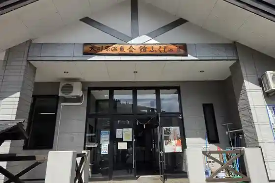
Hidden hot spring in a small hamlet with low-priced, accessible family baths.
Aseishi River Lantern Floating
Lanterns floated on the Aseishi River every August 18 to honor ancestors.